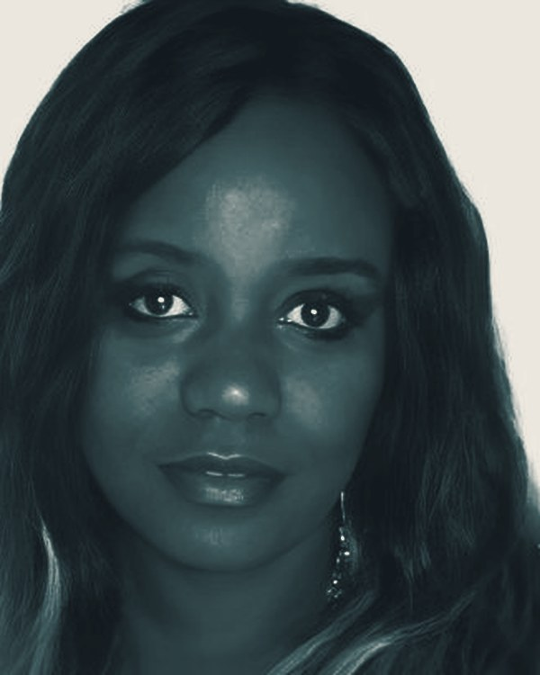
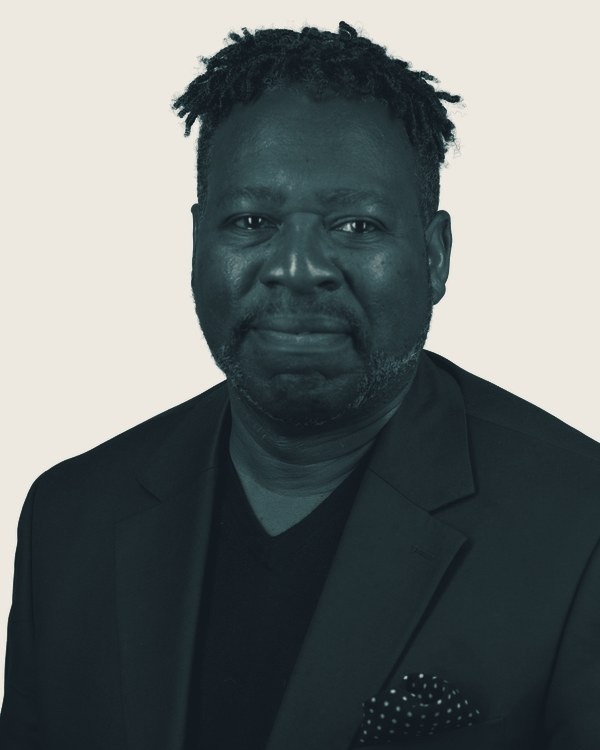
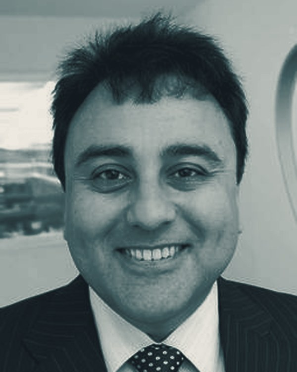
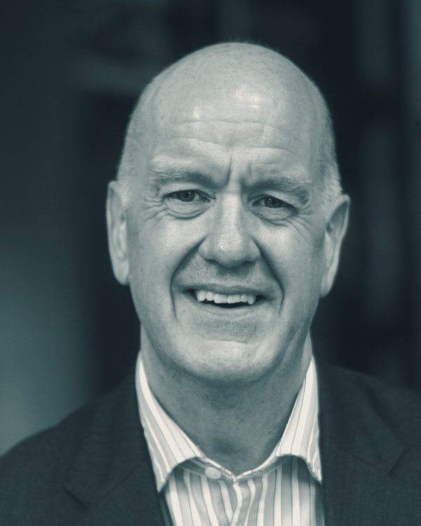
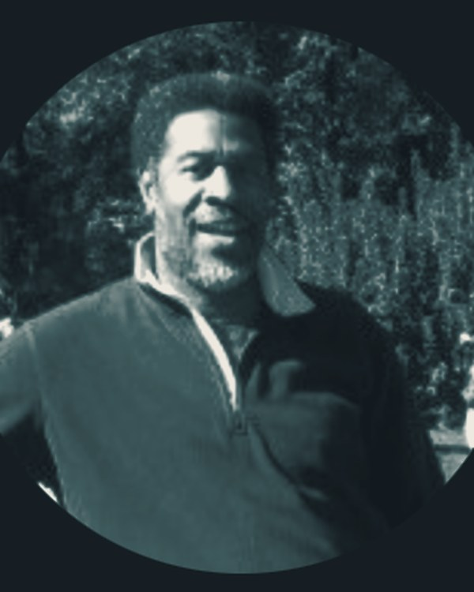
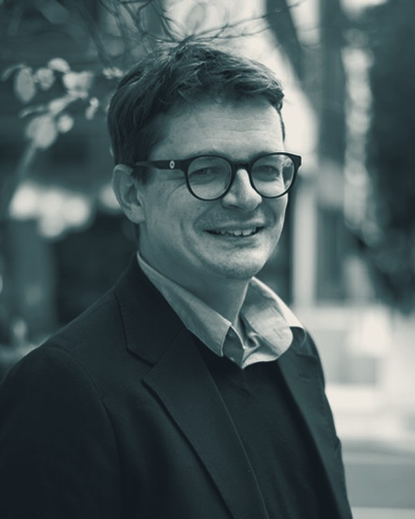

Full bio to be confirmed.
Expert advisory built on the diaspora network: for startups, scale-ups, SMEs, enterprises and government organisations that grow across borders.
Book Consultation →Transform ideas into viable businesses with expert guidance at every stage.
Accelerate growth while maintaining cultural authenticity across borders.
Strengthen market position through strategic diaspora connections.
Leverage diaspora intelligence for competitive advantage at scale.
Harness diaspora potential for measurable economic development.
The route runs from first conversation to measurable growth. Each station has a clear output before the next begins.
We immerse ourselves in your organisation: your goals, challenges, and the diaspora communities most relevant to your growth trajectory.
Our team crafts a bespoke advisory strategy: mapping diaspora networks, identifying opportunities, and building a roadmap tailored to your sector.
We work alongside your team to execute the strategy: facilitating introductions, navigating cultural nuances, ensuring measurable progress.
Regular reviews track KPIs, surface new opportunities, and refine the approach based on real-world results and shifting market dynamics.
A business’s true potential is unleashed when it embraces a diversity of thought and culture. Mark Huxley · Chair, Financial Services Group of Livery Companies

OBE

OBE


The network is the strategy. Advisory turns diaspora connection into measurable growth.
Book a strategic consultation with our advisory team and take the first step toward diaspora-powered growth.